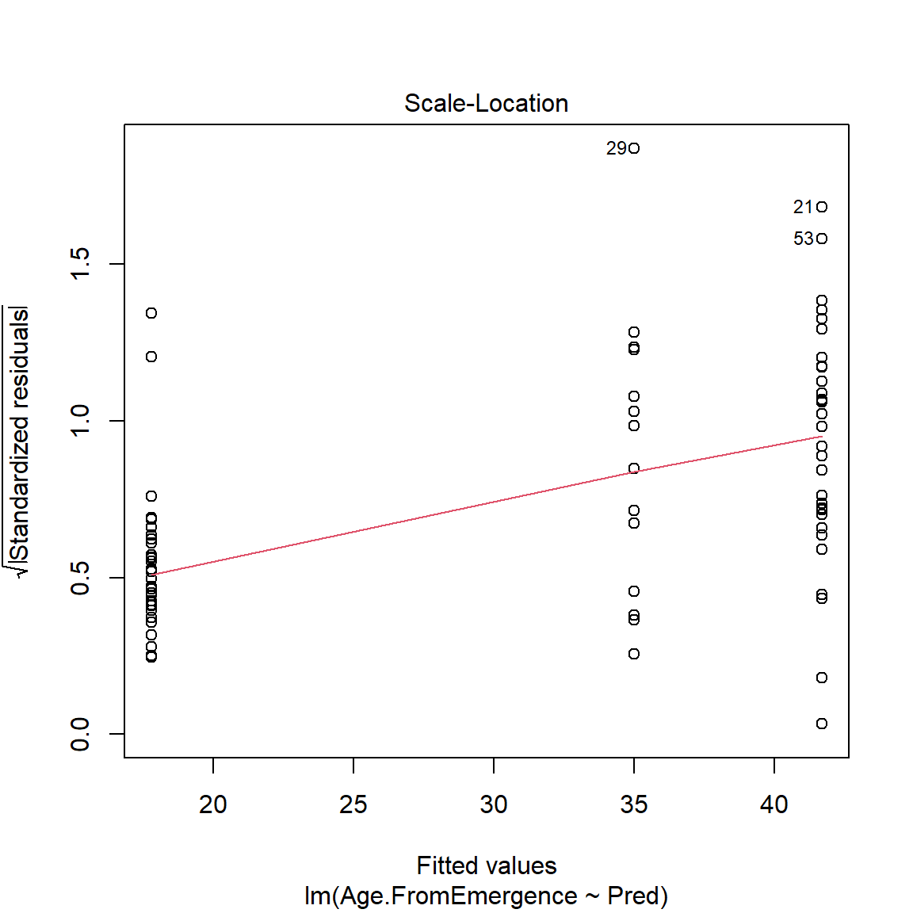
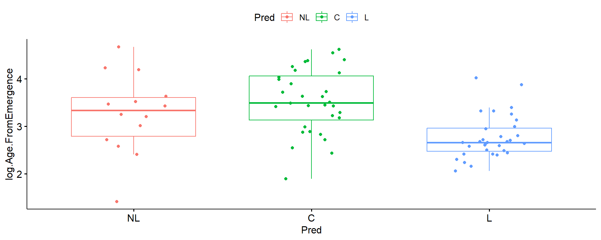

[1] 101.3561[1] 13.69224Módulo 4: Herramientas Estadísticas
Uno de los objetivos de este curso es el evitar en la medida de lo posible el adentrarnos en teoría estadística. Entre los temas que dejaremos de lado están:
Teoría de la probabilidad básica
Descripción a detalle de la distribución normal
Descripción a detalle de otras distribuciones
Sin embargo, es preciso el comenzar por algunas definiciones que inevitablemente serán necesarias para entender de mejor manera el resto del mismo.
Para quién esté interesado en un recurso para ver estos temas a profundidad, recomiendo el libro de Danielle Navarro: Learning Statistics with R
Muestra: Es un conjunto de observaciones que provienen de una población de interés. Idealmente, esta debería ser lo suficientemente grande para hacer inferencias de esa población.
Población: Es el conjunto de todas las posibles observaciones de las que tengamos interés en realizar inferencias. Es vital el definir adecuadamente sus características.
Muestreo: Es el proceso por el cual obtendremos nuestra muestra para un estudio. En estudios experimentales, el muestreo se entiende también como el proceso de aleatorización/randomización de unidades experimentales.
Tomado de Learning Statistics with R
Tomado de Learning Statistics with R
Muestreo sistemático: consiste en tomar un determinado elemento de la población siguiendo un patrón. Por ejemplo, escoger los múltiplos de cuatro enumerados en una lista de posibles individuos de estudio (solía ser una práctica común en ensayos clínicos).
Muestreo a conveniencia: consiste en incluir en el estudio a todos los elementos disponibles de la población de interés. Esto sucede sobre todo con poblaciones escasas o de dificil acceso (ejemplo, realizar estudios en comunidades LGBTIQ+).
Muestreo estratificado: es una combinación del muestreo simple con los sujetos agrupados por alguna característica en común, por ejemplo sexo, edad, hábitat (suele ser usado en exit polls y conteos rápidos).
Los parámetros poblacionales son características de toda una población (ejemplo, supongamos que el IQ de toda una población puede estar caracterizado por una media aritmética, \(\mu\), igual a 100, con una desviación estándar, \(\sigma\), igual a 15).
Si tomo una muestra de 100 individuos de dicha población, podría tener una media aritmética de esta muestra, \(\overline{X}\), igual a 101.4 y una desviación estándar de la muestra, \(s\), igual a 13.7.
En otras palabras, la \(\overline{X}\) y \(s\) son aproximaciones a los valores verdareros de \(\mu\) y \(\sigma\) de esa población.
La ley de los números grandes establece que a medida que aumenta el tamaño de una muestra, \(\overline{X}\) y \(s\) estarán más y más cerca de los valores verdaderos \(\mu\) y \(\sigma\).
Esta es una de las razones por las cuales en la conducción de experimentos siempre se aconseja el intentar recabar tantas observaciones sea posible.
La idea de poder medir enormes números de individuos es irreal.
Sin embargo, consideremos el siguiente escenario: si en lugar de medir el IQ de 100000 personas, repito el experimento una y otra vez pero en grupos de 5, puedo observar que la distribución de las medias aritméticas de todos estos experimentos adopta la forma de una distribución normal
Esta distribución toma el nombre distribución de muestreo de la media aritmética.
Lo que nos demuestra es que, incluso ante reducidos números de observaciones en una muestra, la media aritmética de esta muestra (\(\overline{X}\)) estará próxima a la media aritmética verdadera de la población (\(\mu\)).
El teorema del límite central establece que siempre que el número de observaciones sea lo suficientemente grande, la distribución de muestreo de la media aritmética tenderá a ser normal independientemente de si la distribución de las observaciones es normal o no.
Ejemplo: supongamos que el ancho del caparazón de una especie de tortugas está comprendido entre 4 y 10 centímetros. En otras palabras, si observamos al azar una tortuga de esta población, sabemos que el ancho del caparazón estará en este rango. En términos de una distribución, podemos decir que el ancho del caparazón en una población de 1000 tortugas podría verse de esta manera:
Es gracias al teorema del límite central que la mayor parte de métodos estadísticos giran alrededor de la normalidad.
Sin embargo, cómo ya hemos mencionado, requiere a veces de un considerable número de observaciones para que se cumpla y no todas las veces esto es posible en la práctica.
Por ello, en el desarrollo del curso iremos mostrando ejemplos de cuando esto no ocurre y que medidas podemos tomar en tales casos.
Media aritmética
| Símbolo | ¿Qué es? | ¿Sabemos qué es? |
|---|---|---|
| \(\overline{X}\) | Media aritmética de la muestra | Calculada de los datos |
| \(\mu\) | Verdadera media aritmética de la población | Casi nunca es conocida |
| \(\hat{\mu}\) | Estimado de la media aritmética de la población | Sí, identica a \(\overline{X}\) |
\[ \overline{X} = \frac{1}{n}\sum^{n}_{i=1}\left(X_i\right) \]
Desviación estándar
| Símbolo | ¿Qué es? | ¿Sabemos qué es? |
|---|---|---|
| \(s\) | Desviación estándar de la muestra | Calculada de los datos |
| \(\sigma\) | Verdadera desviación estándar de la población | Casi nunca es conocida |
| \(\hat{\sigma}\) | Estimado de la deviación estándar de la población | Sí, pero no es igual a \(s\) |
\[ s = \sqrt{\frac{1}{n} \sum_{i=1}^n (X_i - \overline{X})^2} \]
\[ \sigma = \sqrt{\frac{1}{n-1} \sum_{i=1}^n (X_i - \overline{X})^2} \]
Varianza
| Símbolo | ¿Qué es? | ¿Sabemos qué es? |
|---|---|---|
| \(s^2\) | Varianza de la muestra | Calculada de los datos |
| \(\sigma^2\) | Verdadera varianza de la población | Casi nunca es conocida |
| \(\hat{\sigma}^2\) | Estimado de la varianza de la población | Sí, pero no es igual a \(s^2\) |
\[ s^2 = \frac{1}{n} \sum_{i=1}^n (X_i - \overline{X})^2 \]
\[ \sigma^2 = \frac{1}{n-1} \sum_{i=1}^n (X_i - \overline{X})^2 \]
Cómo hemos visto, los estimados de las verdaderas \(\mu\) y \(\sigma\) (\(\hat{\mu}\) y \(\hat{\sigma}\)) provienen de distribuciones de muestreo, y como tales, inherentemente poseen cierto grado de incertidumbre.
Los intervalos de confianza son medidas que nos permiten tener una idea de esa incertidumbre.
En el estudio de la distribución normal estándar tenemos el conocimiento que existe un 95% de chances que una cantidad normalmente distribuida colectada al azar, estará distante de la media aritmética entre \(\pm\) 1.96 desviaciones estándar.
\[ \overline{X} - \left(1.96\times\frac{\sigma}{\sqrt{n}}\right) \leq \mu \leq \overline{X} + \left(1.96\times\frac{\sigma}{\sqrt{n}}\right) \]
\[ \text{IC}_{95}=\overline{X} \pm \left(1.96\times\frac{\sigma}{\sqrt{n}}\right) \]
Sin embargo, como mencionamos \(\sigma\) es casi nunca conocido, y es necesario hacer una corrección a la fórmula anterior. La distribución normal trabaja bien baja la presunción de un numero grande de observaciones.
En su lugar, en 1908 el estadístico Gosset parametrizó una distribución para muestras pequeñas que asemeja a la normal. Con el tiempo, esta distribución adoptó el nombre de Student.
Y es precisamente que la fórmula anterior es corregida con la distribución de Student y así poder calcular intervalos de confianza para muestras pequeñas usando \(s\) en lugar de \(\sigma\):
\[ \text{IC}_{95}=\overline{X} \pm \left(t_{n-1,\alpha/2}\times\frac{s}{\sqrt{n}}\right) \]
Donde el valor \(t_{n-1,\alpha/2}\) refiere a:
\(n-1\): los grados de libertad, igual al número de observaciones \(n\) de la muestra, menos 1
\(\alpha\): es el nivel de significancia (probabilidad de obtener un resultado erróneo por azar).
Estos valores en el pasado se encontraban tabulados en libros de texto, hoy contamos con R!
IQ_muestra <- c(101, 98, 116, 96, 129) # muestra
n <- 5 # número de observaciones
t95 <- qt(p = 0.975, df = n -1) # valor de Student para 4 grados de libertad al 5%
x <- mean(IQ_muestra) # media aritmética de la muestra
s <- sd(IQ_muestra) # desviación estándar de la muestra
ls <- x + (t95*s/(n-1)) # límite superior del IC95
li <- x - (t95*s/(n-1)) # límite inferior del IC95IQ_muestra <- c(101, 98, 116, 96, 129) # muestra
n <- 5 # número de observaciones
t95 <- qt(p = 0.975, df = n -1) # valor de Student para 4 grados de libertad al 5%
x <- mean(IQ_muestra) # media aritmética de la muestra
s <- sd(IQ_muestra) # desviación estándar de la muestra
ls <- x + (t95*s/(n-1)) # límite superior del IC95
li <- x - (t95*s/(n-1)) # límite inferior del IC95
print(paste0("Con un 95% de confianza podemos esperar que la verdadera media aritmética de IQ de esta población se encuentre entre [",round(li,0),", ",round(ls,0),"]"))[1] "Con un 95% de confianza podemos esperar que la verdadera media aritmética de IQ de esta población se encuentre entre [98, 118]"La concentración media de glucosa en ratones sanos se ha estimado en un rango entre 80 y 100 mg/dL. En un experimento, se han medido las siguientes concentraciones de glucosa en 10 ratones de una línea genética se presume tendría potencial de ser modelo de hiperglucemia después de unas cuantas más generaciones de cruce selectivo:
Calcula la media aritmética \(\overline{X}\), la desviación de estándar \(s\) y el intervalo de confianza al 95% de la concentración de glucosa en estos ratones. Sin recurrir a pruebas estadísticas formales, ¿dirías que sus niveles de glucosa están dentro de lo normal o hay razón para desconfiar que son hiperglucémicos?
Calcula el \(\text{IC}_{95}\) sin usar la distribución de Student y nota la diferencia.
Una hipótesis de investigación gira alrededor del desarrollar una conclusión científica acerca de un tema de interés del investigador. Ejemplos: el fumar causa cáncer, las vacunas causan/previenen enfermedades.
Hipótesis estadísticas, por el contrario, deben ser matemáticamente precisas y basadas en las características de los datos que recolectemos con el fin de probar o descartar la hipótesis de investigación.
Cómo es de esperar, el probar o descartar una hipótesis estadística será únicamente válida para la población sobre la cual una muestra fue tomada.
Es ahí donde radica la importancia en definir la población sujeto de estudio de manera planificada con el objetivo de que cumpla tantos detalles sean necesarios de la hipótesis de investigación. Ejemplo, el modelo animal más usado es el ratón. Si bien es cierto constituye uno de los primeros pasos en el desarrollo de muchas investigaciones, los hallazgos en ratones NO pueden ser inmediatamente atribuibles a suceder en seres humanos.
La formulación de hipótesis estadísticas puede reducirse a establer preguntas de investigación en forma de las hipótesis nula y alternativa.
La más sencilla manera de formular esta dupla, es la siguiente. Supongamos que tenemos dos grupos experimentales para probar la eficiencia de un nuevo procedimiento quirúrgico. Un grupo de pacientes será sometido a la intervención tradicional (control), y el otro grupo al nuevo procedimiento (experimental).
La hipótesis nula (\(H_0\)) establece que: no existe diferencia entre el grupo control y el grupo experimental,
Mientras que la hipótesis alternativa (\(H_a\)) establece que: sí existe differencia entre ambos.
Las pruebas estadísticas dependen de la cantidad de variación y la diferencia entre tratamientos a detectar (tamaño del efecto). La solución: aumentar el número de observaciones
El poder de una prueba estadística es la probabilidad de rechazar la hipótesis nula cuando esta es de hecho falsa.
Se puede derivar de la tabla anterior
El tamaño del efecto (\(\theta\)) es un valor que por lo general es determinado por el investigador y que puede ser la diferencia de interés a detectar en una prueba estadística.
Por simplicidad, vamos a enfocarnos en el ejercicio de los ratones. Supongamos que el investigador está interesado en saber cual sería el número de ratones que necesitaría para con un 80% de poder, encontrar una diferencia entre la media aritmética de su muestra y un valor que considera razonable chequear igual a 100 mg/dL. Este último valor viene a ser el \(\theta\).
Las hipótesis de esta prueba se verían así
Sin embargo, la pregunta del investigador aún está incompleta. A tu criterio, ¿qué falta?
Al formular hipótesis, hemos considerado el caso más simple hasta el momento. Pero recordando la idea inicial del experimento de los ratones, la opción lógica sería preguntarnos ¿cuántos ratones necesitamos para estar seguros que la población sea hiperglucémica? (cuyo valor de glucosa en sangre esté por encima del de un ratón sano)
Imagen tomada de UCLA: Advanced Research Computing
Imagen tomada de UCLA: Advanced Research Computing
Imagen tomada de UCLA: Advanced Research Computing
Retomando el poder de una prueba estadística (aunque no es un objetivo de este curso), culminaremos esta sección ejemplificando un análisis de poder con nuestro ejemplo del IQ de una muestra de participantes de una determinada población.
Sin entrar en mayor detalle, esto puede lograrse mediante el uso de la librería pwr
El tamaño del efecto para análisis de poder tiene que ser estandarizado
\[ \theta = \frac{\hat{\mu}_r-\hat{\mu}_c}{s} \]
Para mayor detalle del uso de pwr en análisis de poder, puedes acceder a este recurso
library(pwr)
IQ_muestra <- c(101, 98, 116, 96, 129)
s <- sd(IQ_muestra)
uc <- mean(IQ_muestra)
ur <- 100
theta <- (ur-uc)/s
pwr.t.test(d = theta,
sig.level = 0.05,
power = 0.80,
type = "one.sample",
alternative = "two.sided")
One-sample t test power calculation
n = 26.45135
d = 0.5663939
sig.level = 0.05
power = 0.8
alternative = two.sidedA partir de los estadísticos de muestreo de la muestra de ratones del ejemplo anterior, ¿cuál sería el número de los mismos para en un futuro experimento llevar a cabo una prueba estadística con al menos 80% de poder si el objetivo es demostrar que de hecho la media aritmética de esta línea de ratones está por encima del límite superior de 100 mg/dL de glucosa en sangre que se sabe poseen ratones saludables?
Pero ¿cómo sabemos si una hipótesis es aceptada o rechazada?
Regresando al concepto de los intervalos de confianza, los cuartiles de la distribución de Student calculados a un nivel de significancia \(\alpha\) son valores críticos sobre los cuales se determina el rechazo o aceptación de la hipótesis nula.
El valor p, describe que tan probable sería observar resultados de la prueba asumiendo que la hipótesis nula no hubiese sido rechazada. Por ello, a menores valores p, mayor la diferencia estadística con respecto a la hipótesis alternativa.
Imagen tomada de aquí
El umbral de 0.05 es una convención arbitraria creada por Fischer en los inicios de la estadística moderna.
Lastimosamente, se ha generalizado la idea de que por más mínima sea la diferencia con respecto a 0.05, esta representa la diferencia entre publicar o no (en el campo académico), entre lanzar o no un nuevo fármaco/producto al mercado (en la industria).
En 2014, debido a un fallo de la corte suprema de justicia de los Estados Unidos que le dio la potestad a los inversionistas de farmaceúticas a demandarlas por fallar en reportar efectos secundarios de sus productos a pesar de haber sido hallados estadísticamente no significativos, la Asociación Americana de Estadística (ASA) se vio en la necesidad de definir más exhaustivamente el concepto del valor p.
Entre las recomendaciones de la ASA, se enfatizó el dar mayor prioridad a la estimación de otros estadísticos complementarios al valor p, tales como intervalos de confianza u otros provenientes de la estadística Bayesiana (intervalos de credibilidad, factores de Bayes).
Esta última (estadística Bayesiana), ofrece una interpretación más natural de la estadística al basarse en métricas de incertidumbre puras y no en números arbirtrarios como el valor p.
En resumen, una investigación no es inútil si el valor p sobrepasa o está por debajo de 0.05 por cantidades pequeñas.
En su lugar, en escenarios en que el valor p está alejado por una décima o varias centésimas de 0.05, los resultados deberían interpretarse como indeterminados para generalizar sobre la población objeto de estudio y específicos a las condiciones experimentales (análisis estadísticos, instrumentos de medición, etc) bajo las cuales fueron tomadas y modeladas las mediciones.
En el contexto de los modelos estadísticos que veremos más adelante, esto ha derivado en un “temor” del investigador cuando los resultados no pasan los chequeos de los supuestos sobre los que estos modelos se cimentan. Sobre todo cuando el valor p dista de 0.05 por ínfimas cantidades.
Esto puede llevar a malas prácticas científicas tales como: no reportar el resultado de los chequeos, blindar los datos, escoger “outliers” y removerlos y en el peor de los casos, manipular los datos para tratar de acomodar nuestros datos a estos chequeos.
Todo lo que he mencionado, no solamente constituyen casos de mala conducta científica, sino lo que hoy en día se le conoce como p hacking (que se puede resumir a torturar los datos hasta que nos confiesen una verdad agradable a nuestros propósitos).
Para esta sección del curso usaremos algunas de las tablas de datos del libro Using R for Introductory Statistics, como también de la librería datarium.
Para ello, instalaremos las librerías de R: UsingR y datarium.
Las pruebas t son usadas para encontrar la diferencia entre dos medias aritméticas.
La \(H_0\) en estas pruebas es que las medias aritméticas son las mismas.
Se rechaza la \(H_0\) cuando el valor p resultante es \(<\) 0.05
Existen tres tipos de pruebas t
Pruebas t de una muestra
Pruebas t de muestras independientes
Pruebas t de muestras emparejadas
Estas pruebas fueron desarrolladas bajo la suposición de la normalidad y de homogeneidad de las varianzas.
De acuerdo a lo que hemos visto acerca del teorema del límite central, muestras grandes casi aseguran la normalidad.
Cuando el número de observaciones en una muestra es pequeño, es recomendable llevar a cabo un test de normalidad para decidir si es posible llevar a cabo una prueba t o una de sus alternativas.
Antes de llevar a cabo las pruebas t, hemos mencionado sus supuestos. Por ello, es aconsejable el siempre realizar estas pruebas antes de usarlas.
Existen dos tipos de pruebas para establecer si una muestra es normalmente distribuida o no
Indirectamente: gráfico Q-Q
Prueba formal de normalidad (ejemplo: Shapiro-Wilk)
En el caso del ANOVA, es importante enfatizar que estas pruebas no necesariamente tienen que hacerse antes de la prueba, como ya veremos más adelante.
El gráfico Q-Q es una prueba visual indirecta de la normalidad.
Consiste en crear un gráfico de dispersión entre los valores observados de una muestra vs. los valores que deberían estos tener si siguieran una distribución normal.
Mientras en el gráfico de dispersión los puntos más se distribuyan a lo largo de una diagonal, más cercanos están los datos de la muestra a seguir un distribución normal.
Su desventaja es que es muy subjetivo, y a menudo requiere una prueba formal para poder confirmarlo.
La \(H_0\) de esta prueba (y del resto de pruebas formales de normalidad) es que un set de \(n\) observaciones es normalmente distribuido.
Otro conocido método es Kolmogorov-Smirnov. Sin embargo, Shapiro-Wilk es más apropiado para cuando el número de muestras es menor a 50.
Para ilustrar su uso, chequeemos la normalidad de los datos que simulamos anteriormente
En el caso de comparaciones entre las medias de dos grupos, la homogeneidad de varianzas puede chequearse usando la prueba F.
La prueba t de una muestra no requiere chequear este supuesto.
Para ilustrar su uso, creemos otro vector con datos simulados. En este caso, un igual número de observaciones con la misma desviación estándar pero diferente media:
F test to compare two variances
data: x and y
F = 1, num df = 29, denom df = 29, p-value = 1
alternative hypothesis: true ratio of variances is not equal to 1
95 percent confidence interval:
0.4759648 2.1009958
sample estimates:
ratio of variances
1 Usemos las pruebas con datos reales, esta vez con la tabla de datos crime de la librería Using R.
Esta tabla de datos contiene registros de las tasas de crimen (# de reportes/100000 habitantes) en 50 estados en los Estados Unidos correspondiente a los años 1983 y 1993.
Sin enfocarnos por el momento en que prueba t específica usaremos, limitémonos a chequear la normalidad y la homogeneidad de varianzas entre las tasas de crimen registradas en 1983 y 1993.
Homogeneidad de las varianzas
F test to compare two variances
data: crime$y1983 and crime$y1993
F = 0.49163, num df = 50, denom df = 50, p-value = 0.01342
alternative hypothesis: true ratio of variances is not equal to 1
95 percent confidence interval:
0.2806163 0.8613069
sample estimates:
ratio of variances
0.4916266 A menudo nos encontraremos con conjuntos de observaciones que no cumplen uno o ninguno de los supuestos.
Antes de considerar pruebas no paramétricas, podemos intentar transformaciones de variables para regresar al mundo de las pruebas paramétricas. Las transformaciones más usadas son:
La raíz cuadrada (si los datos no contienen números negativos)
Elevar al cuadrado
Logaritmo (si los datos solo incluyen números reales positivos, cero excluido)
Existe un método más sofisticado para “normalizar” una muestra. La transformación de Box-Cox.
Cuando se trabaja con muestras transformadas, el objetivo es poder revertir la transformación a las unidades reales para así poder hacer conclusiones sobre las inferencias estadísticas.
En otras palabras, una misma transformación debe aplicarse a todos los grupos a ser comparados. NO tiene ningún sentido tratar de realizar inferencias entre grupos donde se hayan usado distintas transformaciones para normalizarlos.
Si el número de observaciones es muy reducido, usualmente no hay transformación que funcione y se recomienda usar directamente pruebas no paramétricas.
Raíz cuadrada
Logaritmo
Homogeneidad de las varianzas con transformación logarítmica
F test to compare two variances
data: log(crime$y1983) and log(crime$y1993)
F = 0.84048, num df = 50, denom df = 50, p-value = 0.5412
alternative hypothesis: true ratio of variances is not equal to 1
95 percent confidence interval:
0.4797393 1.4724831
sample estimates:
ratio of variances
0.8404808 Es usada para comparar la media aritmética de una muestra con un valor conocido (un estándar por ejemplo).
Por lo general la el valor al que se va a comparar proviene de referencias bibliográficas, pre-experimentos o supociones fundamentadas.
En este caso, el supuesto que debe cumplirse es el de la normalidad de los datos
Regresando a nuestro ejemplo de los ratones, determinemos si la media de la muestra es mayor al límite superior de glucosa de ratones saludables.
glc_rat <- c(108.7, 93.7, 52.7, 79.0, 74.7, 131.9, 99.5, 63.3, 98.6, 92.7)
t.test(glc_rat,
mu = 100,
alternative = "greater")
One Sample t-test
data: glc_rat
t = -1.4485, df = 9, p-value = 0.9093
alternative hypothesis: true mean is greater than 100
95 percent confidence interval:
76.16687 Inf
sample estimates:
mean of x
89.48 La tabla de datos blood de la librería UsingR tiene las medidas de presión sistólica de sangre correspondientes a 15 pacientes (columna “machine”). De acuerdo al Centro de Prevención y Control de Enfermedades de los Estados Unidos (CDC), una presión sistólica saludable está por debajo de 120 mm Hg. Determina si la media de la muestra contenida en esta tabla de datos está por debajo de este valor sugerido por el CDC.
Copia y pega las siguientes líneas de código a tu script. Luego de ejecutarlas, una tabla de datos de nombre blood aparecerá disponible en la ventana del ambiente de RStudio
Tip: para acceder a la columna con las presiones sistólicas, usa la siguiente sintaxis: blood$machine
Es usado para comparar las medias aritméticas de dos grupos independientes.
Por ejemplo, si deseas comparar las medias aritméticas de individuos agrupados por sexo.
Para ilustrar esta prueba, vamos a hacer uso de la tabla de datos de genderweight de la librería datarium.
Chequeamos normalidad: Group M
Chequeamos la homogeneidad de las varianzas
F test to compare two variances
data: genderweight$weight by genderweight$group
F = 0.21692, num df = 19, denom df = 19, p-value = 0.001648
alternative hypothesis: true ratio of variances is not equal to 1
95 percent confidence interval:
0.08585766 0.54802553
sample estimates:
ratio of variances
0.2169152 ¡La homogeneidad de las varianzas no se cumple! 😱
¿Debemos transformar? No necesariamente
Únicamente en el caso de las pruebas t, el no cumplir con el supuesto de la homogeneidad de varianzas no es un gran problema.
La función base de R t.test cuenta con el argumento var.equal = F como default.
Bajo este argumento, no se asumen varianzas iguales entre los grupos y en su lugar R lleva a cabo la aproximación de Welch para lidiar con este problema.
Welch Two Sample t-test
data: genderweight$weight by genderweight$group
t = -20.791, df = 26.872, p-value < 2.2e-16
alternative hypothesis: true difference in means between group F and group M is not equal to 0
95 percent confidence interval:
-24.53135 -20.12353
sample estimates:
mean in group F mean in group M
63.49867 85.82612 La tabla de datos normtemp de la librería UsingR tiene las medidas en grados Fahrenheit de temperatura corporal (columna “temperature” ) correspodientes a 65 mujeres y 65 hombres (columna “gender”). Determina si existe una diferencia entre las temperaturas corporales de hombres y mujeres.
Copia y pega las siguientes líneas de código a tu script. Luego de ejecutarlas, una tabla de datos de nombre normtemp aparecerá disponible en la ventana del ambiente de RStudio
Tip: para acceder a las columnas con las temperaturas corporales y sexo, usa la siguiente sintaxis: normtemp$temperature y normtemp$gender respectivamente
Es usado para comparar las medias de dos grupos que guardan una relación.
Esto solo ocurre cuando las medidas se han realizado a partir de los mismos grupos. Por ejemplo, al inicio y al final de un experimento.
Para esta prueba, vamos a usar la tabla de datos crime de la librería UsingR
Paired t-test
data: log(crime$y1983) and log(crime$y1993)
t = -10.027, df = 50, p-value = 1.469e-13
alternative hypothesis: true mean difference is not equal to 0
95 percent confidence interval:
-0.3628437 -0.2417349
sample estimates:
mean difference
-0.3022893 [1] 362.8298[1] 490.8915La tabla de datos mice2 de la librería datarium tiene las medidas del peso de 10 ratones antes y después de haber sido sometidos a una determinada dieta. Encuentra si existe una diferencia significativa en el peso de estos ratones antes y después del régimen de dieta al que fueron expuestos. ¿Ganaron o perdieron peso?
Copia y pega las siguientes líneas de código a tu script. Luego de ejecutarlas, una tabla de datos de nombre mice2 aparecerá disponible en la ventana del ambiente de RStudio
Tip: usa el mismo tips de los ejemplos anteriores
UsingR tenemos disponible una lista con 5 objetos bajo el nombre cancer. Esta contiene el tiempo de sobreviviencia en días de pacientes con distintos tipos de cáncer desde el momento de su diagnóstico hasta su deceso. Chequea si los datos correspondientes a cancer de colon son normalmente distribuidos. Si no lo son, prueba si puedes normalizarlos usando alguna de las tres transformaciones que vimos. En el caso que más de una transformación funcione, ¿cuál escogerías para continuar con alguna prueba estadística, y por qué?Tip: usa el siguiente código para extraer en un vector los datos de pacientes con cáncer de colon:
Las pruebas de Wilcoxon usan la mediana como criterio para evaluar la \(H_0\).
Lastimosamente, estas pruebas son usualmente menos poderosas (mayor tasa de errores tipo II).
Tiene dos formas:
Pruebas para una muestra (análoga a la prueba t para una muestra)
Pruebas para dos muestras (análoga a las pruebas t para dos muestras independientes y emparejadas)
Prof. Danielle Navarro midió el nivel de felicidad de sus estudiantes antes y después de su clase de Estadística. Ella estaba interesada en saber si el tomar una clase de Estadística tiene algún efecto en la felicidad de sus estudiantes. Los datos que obtuvo no están normalmente distribuidos. Por ello, se vio en la necesidad de llevar a cabo una prueba de Wilcoxon.
En este caso, la \(H_0\), es que la diferencia de la mediana de la felicidad de sus estudiantes antes y después de la clase debería ser igual a cero para clamar que no existe tal efecto.
# Primero recreo la tabla de Prof. Navarro
felicidad <- data.frame(before = c(30,43,21,24,23,40,29,56,38,16),
after = c(6,29,11,31,17,2,31,21,8,21))
felicidad$change <- felicidad$after - felicidad$before
wilcox.test(felicidad$change, mu = 0)
Wilcoxon signed rank exact test
data: felicidad$change
V = 7, p-value = 0.03711
alternative hypothesis: true location is not equal to 0Regresando al ejemplo de la tabla de datos genderweight, supongamos que estos no están normalmente distribuidos.
Usaremos la prueba de Wilcoxon para muestras independientes para ver si existe diferencia entre los pesos de hombres y mujeres.
Con el vector de nombre colon que creaste en el ejercicio 4.6, aplica una prueba de Wilcoxon para una muestra bajo la hipótesis de que la mediana de los días de superviviencia de un paciente con cáncer de colon es de 370 días.
A partir de la tabla de datos de felicidad de la Prof. Navarro, lleva a cabo una prueba de Wilcoxon para dos muestras emparejadas de la felicidad de los estudiantes antes y después de recibir una clase de Estadística. Compara el resultado con la prueba de una muestra que usé de ejemplo. ¿Por qué no hay diferencia?.
Una tabla de contigencia nos sirve para ver si los valores de una variable categórica dependen de los valores de otra variable categórica.
El análisis de contingencia nos permite probar formalmente la asociación entre dos o más variables categóricas.
¿Qué tan probable es que beban más alcohol personas que fuman con respecto a aquellas que no?
¿Las personas que toman una aspirina diaria tienen menos probabilidad de sufrir un ataque cardíaco con respecto a las que no?
La variable B (o respuesta) contendrá como posibles resultados “éxito” o “fracaso”.
La variable A (o explanatoria) posee las clases que identifican los grupos cuya probabilidad es sujeto de comparación.
El cociente de probabilidad mide la magnitud de asociación entre dos variables categóricas cuando estas tienen dos clases.
En una tabla de contingencia \(2 \times 2\), el cociente de probabilidad (OR) se define como:
\[ OR=\frac{n_{11}/n_{12}}{n_{21}/n_{22}} \]
La interpretación del OR depende de la magnitud del mismo:
Igual a 1, los eventos (clase de la variable explanatoria) son independientes de la variable de respuesta.
Mayor o menor a 1, existe una relación positiva o negativa de la variable explanatoria con la variable de respuesta.
La magnitud de OR depende de la clase tomada como base en el análisis.
Usaremos para este ejemplo los datos del Titanic. La pregunta de investigación es: ¿tuvieron las mujeres mayores probabilidades de salvarse durante el hundimiento del Titanic?
Vemos que el cociente de probabilidad (OR) es 10. La interpretación es: durante el hundimiento del Titanic fue 10 veces más probable que un pasajero se salve si este era mujer.
Adicionalmente, del valor p de la prueba estadística exacta de Fisher menor al 0.05, se puede concluir que este cociente de probabilidad es significativo. En otras palabras, existe evidencia estadística significativa para afirmar que las probabilidades de sobrevivir durante el hundimiento del Titanic fueron 10 veces más para pasajeras mujeres en comparación a los hombres.
Hasta el momento nos hemos enfocado a los casos donde comparamos las medias entre dos grupos.
Pero es más común el evaluar distintos tratamientos al mismo tiempo, como ya vimos en el módulo 2 del curso.
Para ello, contamos con el ANOVA, desarrollado por el estadístico Ronald Fisher a inicios del siglo 20, y que sin duda es el método estadístico más usado hoy en día.
Su nombre puede ser confuso. El objetivo de un ANOVA es el de determinar la existencia de diferencias entre las medias aritméticas de las muestras representativas de \(n\) poblaciones (o en términos más precisos, tratamientos).
Independencia de los datos: conseguida mediante una correcta randomización y definición del experimento.
Homogeneidad de las varianzas: la varianza entre los tratamientos es la misma.
Normalidad: pero, ¿de qué exactamente?
Siempre ha existido una confusión de este supuesto. Cómo vimos antes, la normalidad es un requisito para conducir pruebas t, y lo es también para el ANOVA.
Muchos libros de texto y otros recursos, mencionan que los datos de cada tratamiento deben ser normalmente distribuidos para llevar a cabo un ANOVA. Esto es cierto e impráctico a la vez.
Mencionamos que como mínimo deberíamos contar con 3 repeticiones por tratamiento. Pero, ¿son 3 repeticiones suficientes para alcanzar la normalidad?
Es común el sugerir el llevar a cabo una prueba de normalidad antes de llevar a cabo un ANOVA, pero esto tiene varios problemas que supongo no te han dicho antes:
Cada tratamiento tiene su propia media, en caso de medias muy distantes entre sí, la prueba puede fallar.
En su lugar, podrías correr una prueba por cada tratamiento. Esto solo funciona con un considerable número de observaciones/tratamiento (3 no son suficientes).
Esta confusión nos puede llevar a soluciones erróneas como transformar datos, borrar outliers o utilizar pruebas no paramétricas innecesariamente.
Entonces, ¿normalidad de qué?
De los residuales estandarizados!… ¿Qué es un residual?
Un residual es la diferencia entre una observación y su predicción
Un residual estandarizado resulta de la división del residual para la raíz cuadrada de la predicción
La distribución muestral de los residuales estandarizados tiene media 0 y desviación estándar 1
Y es sobre esta distribución que los valores críticos del ANOVA (valores F) son calculados. Es decir, estos no dependen enteramente de los datos originales, por lo tanto los datos originales no tienen que ser necesariamente normalmente distribuidos.
Pero, ¿por qué la confusión? Solo cuando el número de observaciones es lo suficientemente grande (y ya sabemos que distribución tiene la media muestral cuando el número incrementa), se tiene la certeza que los residuales serán normalmente distribuidos.
En resumen, es mejor chequear la normalidad después que realizamos el ANOVA.
Imagen tomada por David Mark de Pixabay
Los datos que usaremos en esta y otras secciones corresponden a un experimento del Prof. Justin C. Touchon acerca de la interacción entre predadores y recursos.
El experimento consistió de múltiples tanques (mesocosmos) dispuestos al aire libre en Gamboa, Panamá. Los investigadores tenían por objetivo el saber como la variación en la incubación de huevos de la rana arbórea de ojos rojos podría afectar su desarrollo hasta la metamorfosis bajo varias combinaciones de recursos y predadores.
Los tratamientos fueron los siguientes:
Edad de incubación: Temprana (E: 4 días después de la oviposición) o tardía (L: 6 días después de la oviposición).
Predadores: control (C), no letal (NL: larvas de libélula enjauladas) y letal (L: larvas de libélula libres)
Recursos: bajo (Lo: 0.75 g) o alto (Hi: 1.5 g) de comida suministrados cada 5 días.
Los mesocosmos fueron colocados en 8 bloques de 12 tanques cada uno.
El experimento inició con 50 renacuajos por tanque y terminó cuando todos los renacuajos alcanzaron la metamorfosis, o murieron.
Variables de respuesta:
Edad de metaformosis contada desde el día de oviposición (Age.DPO).
Edad de salida del agua (Age.FromEmergence)
Longitud nariz-cloaca al emerger (SVL.initial)
Longitud de la cola al emerger (Tail.initial)
Longitud nariz-cloaca al término de la reabsorción de la cola (SVL.final)
Peso al término de la reabsorción de la cola (Mass.final)
Número de días requeridos por cada metamorfo para reabsorber completamente la cola (Resorb.days)
18 tanques conteniendo predadores no letales fueron descartados debido al brote de una enfermedad.
NOTA: el dataset original de Touchon contiene alrededor de 2500 observaciones. Sin embargo, para poder usar los datos bajo los supuestos del ANOVA es necesario reducirlos a las medias aritméticas de cada tratamiento por cuanto se tratan de pseudo repeticiones. Esta reducción ya está hecha en el archivo “touchon.csv” disponible con el resto de materiales extras del curso.
ANOVA de una vía se refiere cuando tenemos más de dos tratamientos que están definidos por un solo factor a la vez.
Usando los datos del Prof. Touchon, vamos a ilustrar el caso del ANOVA de una vía. Para ello, vamos a considerar lo siguiente
Supongamos que estamos interesados en saber si existe alguna diferencia entre la edad de salida del agua Age.FromEmergence determinada por los predadores:
Los niveles del factor predadores son:
Predadores no letales NL
Predadores letales L
Control (sin predadores) C
La \(H_0\) en todo ANOVA es simplemente que no existe diferencia entre \(n\) tratamientos, y la \(H_a\) es que al menos uno de los tratamientos tiene una media distinta.
Existen dos formas de llevar a cabo ANOVA en R:
Crear un modelo lineal con la función lm y luego llevar a cabo el ANOVA con la función anova sobre el objeto producto de lm.
Aplicar directamente la función aov sobre nuestros datos.
Ambas funciones (lm y aov) tienen la misma sintaxis. Personalmente prefiero la primera opción.
Adicionalmente, la librería car ofrece la función Anova. El resultado de ambas es prácticamente el mismo para la mayoría de modelos. Sin embargo, personalmente prefiero Anova ya que permite realizar correcciones cuando tenemos datos no balanceados.
Opción 1
Anova Table (Type II tests)
Response: Age.FromEmergence
Sum Sq Df F value Pr(>F)
Pred 9467 2 10.442 9.986e-05 ***
Residuals 33999 75
---
Signif. codes: 0 '***' 0.001 '**' 0.01 '*' 0.05 '.' 0.1 ' ' 1 Df Sum Sq Mean Sq F value Pr(>F)
Pred 2 9467 4733 10.44 9.99e-05 ***
Residuals 75 33999 453
---
Signif. codes: 0 '***' 0.001 '**' 0.01 '*' 0.05 '.' 0.1 ' ' 1Como vimos, después de aplicar la transformación logarítmica el gráfico Q-Q mejoró considerablemente.
Para estar seguros, podemos correr un test formal sobre los residuales del modelo con la ayuda de la librería olsrr mediante su función ols_test_normality.
-----------------------------------------------
Test Statistic pvalue
-----------------------------------------------
Shapiro-Wilk 0.9802 0.2645
Kolmogorov-Smirnov 0.0893 0.5625
Cramer-von Mises 8.6738 0.0000
Anderson-Darling 0.5447 0.1566
-----------------------------------------------La prueba más usada para chequear la homogeneidad de varianzas de un ANOVA es la de Levene.
Para ello utilizaremos la función leveneTest de la librería car. Podemos usar esta función directamente sobre los datos con la misma sintaxis de lm, o sobre el objeto lm2 en el que anteriormente almacenamos el resultado del modelo lineal con la transformación.
Preguntas naturales seguidas de estos resultados son: ¿qué tan distintos son los tratamientos entre sí?, ¿puedo acaso ordernarlos de mayor a menor?, ¿existen pares de tratamientos que son iguales?
Podemos comenzar con una ayuda visual (que pudo bien haber sido parte de nuestro AED)
Los métodos de comparaciones múltiples nos ayudan a responder estas preguntas.
Los más usados son:
HSD Tukey (Honestly significant difference): lleva a cabo todos los pares de comparaciones posibles entre los niveles de un factor.
Prueba de Dunnett: Compara los niveles únicamente con respecto al nivel control dentro del factor.
Son conocidos como pruebas o comparaciones post-hoc.
En R, la manera más sencilla de llevar a cabo comparaciones múltiples es mediante las librerías emmeans y multcomp.
Pred response SE df lower.CL upper.CL
C 34.2 3.79 75 27.4 42.6
L 15.8 1.75 75 12.7 19.7
NL 26.2 4.38 75 18.8 36.5
Confidence level used: 0.95
Intervals are back-transformed from the log scale multcomp# multcomp necesita una librería extra llamada multcompView
# No olvides instalar multcompView antes de correr este código
library(multcomp)
cld(ph1) Pred response SE df lower.CL upper.CL .group
L 15.8 1.75 75 12.7 19.7 1
NL 26.2 4.38 75 18.8 36.5 2
C 34.2 3.79 75 27.4 42.6 2
Confidence level used: 0.95
Intervals are back-transformed from the log scale
P value adjustment: tukey method for comparing a family of 3 estimates
Tests are performed on the log scale
significance level used: alpha = 0.05
NOTE: If two or more means share the same grouping symbol,
then we cannot show them to be different.
But we also did not show them to be the same. flextable para exportar nuestras tablas a Word.Sum Sq | Df | F value | Pr(>F) |
|---|---|---|---|
9.710023 | 2 | 12.38871 | 0.00002244333 |
29.391750 | 75 |
Pred | response | SE | df | lower.CL | upper.CL | .group |
|---|---|---|---|---|---|---|
L | 15.79873 | 1.748353 | 75 | 12.67301 | 19.69537 | 1 |
NL | 26.17238 | 4.378862 | 75 | 18.75403 | 36.52512 | 2 |
C | 34.20777 | 3.785575 | 75 | 27.43991 | 42.64488 | 2 |
flextable para exportar nuestras tablas a Word.Sum Sq | Df | F value | Pr(>F) |
|---|---|---|---|
9.710 | 2.000 | 12.389 | 0.000 |
29.392 | 75.000 |
Pred | response | SE | df | lower.CL | upper.CL | .group |
|---|---|---|---|---|---|---|
L | 15.799 | 1.748 | 75.000 | 12.673 | 19.695 | 1 |
NL | 26.172 | 4.379 | 75.000 | 18.754 | 36.525 | 2 |
C | 34.208 | 3.786 | 75.000 | 27.440 | 42.645 | 2 |
library(flextable)
tabla_anova <- colformat_double(flextable(Anova(lm2)), digits = 3)
tabla_tukey <- colformat_double(flextable(cld(ph1)), digits = 3)
save_as_docx("Tabla Anova" = tabla_anova, "Tabla Anova" = tabla_tukey,
path = "C:/Users/mmore/Documents/cursos_uce_2023/modulos/uce2023-modulo4/anova.docx")Recordemos que 18 tanques con predadores no letales fueron descartados debido al brote de una enfermedad.
El diseño original de Touchon era balanceado. Al perderse unidades experimentales, el diseño se le puede denominar como desbalanceado. En otras palabras, el desbalance es la pérdida de observaciones.
La mayoría de métodos estadísticos requieren ser corregidos ante observaciones perdidas para poder tener la certeza de que los estimados que obtenemos no sean sesgados.
Sin adentrarnos en mayor detalle, uno de los componentes de la tabla de ANOVA es la suma de cuadrados. Existen tres tipos de suma de cuadrados: I, II y III.
En breve, las sumas II y III se aconseja sean usadas cuando existen interacciones en el ANOVA.
En R, la función aov calcula la suma de cuadrados tipo I. Este tipo de suma no es conveniente ante la presencia de desbalance de los datos.
En cambio, la función Anova de la librería car, usa por default el tipo II que es precisamente el recomendado usar ante la presencia de desbalance.
En resumen, sí. Hemos utilizado hasta el momento la corrección adecuada para estos datos.
Resorb.days de los datos de TouchonLa prueba de Kruskal-Wallis es la alternativa no paramétrica al ANOVA de una vía.
Puede extenderse al ANOVA de múltiples vías reorganizando el diseño experimental.
Similar a las pruebas de Wilcoxon, se basa en encontrar diferencias de las medianas en lugar de las medias y su poder ese menor.
Para ilustrar este ejemplo, tomemos la variable Age.DPO del estudio de Touchon y veamos si existen diferencias con respecto al tratamiento de predador Pred. Age.DPO sin transformaciones no cumple con los supuestos del ANOVA.
Con KW también podemos llevar a cabo comparaciones múltiples.
En R base contamos con la función pairwise.wilcox.test que lleva a cabo comparaciones por pares mediante el método de Wilcoxon.
SVL.initial) con respecto a los predadores Pred en los datos de Touchon. ¿Qué método es factible usar?, ¿ANOVA de una vía o Kruskal-Wallis?Con respecto a los DDE que vimos en el módulo 2, el ANOVA de una vía corresponde directamente al análisis que llevaríamos a cabo para un DCA.
Para extender el modelo a un DBCA de una vía basta el incorporar otro efecto principal en el modelo:
Anova Table (Type II tests)
Response: log(Age.FromEmergence)
Sum Sq Df F value Pr(>F)
Pred 9.8369 2 13.9265 8.526e-06 ***
as.factor(Block) 5.3760 7 2.1746 0.04728 *
Residuals 24.0158 68
---
Signif. codes: 0 '***' 0.001 '**' 0.01 '*' 0.05 '.' 0.1 ' ' 1La interpretación de este tipo de ANOVA se enfoca en el valor p de los tratamientos.
No tiene mucho sentido el interpretar el valor p del factor de bloque ya que está ahí para controlar fuentes de variación.
De manera similar, cuando extendamos el ANOVA a más factores, el análisis del DBCA factorial se consigue añadiendo un efecto principal para el bloque.
Pred response SE df lower.CL upper.CL .group
L 15.8 1.66 68 12.8 19.5 1
NL 27.6 4.89 68 19.4 39.3 2
C 34.2 3.59 68 27.7 42.2 2
Results are averaged over the levels of: Block
Confidence level used: 0.95
Intervals are back-transformed from the log scale
P value adjustment: tukey method for comparing a family of 3 estimates
Tests are performed on the log scale
significance level used: alpha = 0.05
NOTE: If two or more means share the same grouping symbol,
then we cannot show them to be different.
But we also did not show them to be the same. El ANOVA puede extenderse para analizar dos o más factores a la vez. Su nombre entonces varía dependiendo de cuántos factores analicemos, así: ANOVA de dos vías (2 factores), ANOVA de tres vías (3 factores) …
En la práctica es recomendable diseñar experimentos hasta máximo 3 factores:
A más factores, más costosa la investigación
A más factores, sus interacciones son más difíciles de interpretar
Es posible inclusive que tengamos resultados sin sentido (interacciones innecesarias)
¿Qué son las interacciones?
Una interacción se refiere cuando los niveles de un factor podrían depender de los niveles de otro.
Por ejemplo, con los datos de las ranas, podríamos imaginar que en la ausencia de predadores, tener recursos altos o bajos podría influenciar el tiempo que tomaron los renacuajos en culminar la metamorfosis. Es decir, si hay predadores presentes, podría darse el caso de que las presas se escondan y coman menos influenciando así ese tiempo.
Así, podríamos saber si el effecto de los recursos son influenciados ante la presencia de predadores
Vamos a usar nuevamente los datos de Touchon, la variable de respuesta es la edad de metamorfosis Age.DPO y los factores la presencia de predadores Pred y los recursos Res.
Para llevar a cabo un ANOVA de múltiples vías en R podemos usar la siguiente sintaxis: Factor1*Factor2
Para ahorrarnos tiempo, supóngamos que ya corrimos un primer ANOVA, y encontramos que usando el logaritmo de Age.DPO podemos normalizar los residuales. Pero nos encontramos con esto:
Levene's Test for Homogeneity of Variance (center = "mean")
Df F value Pr(>F)
group 5 6.0253 0.0001033 ***
72
---
Signif. codes: 0 '***' 0.001 '**' 0.01 '*' 0.05 '.' 0.1 ' ' 1¡La homogeneidad de las varianzas no se cumple! 😱
Este es un escenario común y que quizá nos haga realmente considerar usar Kruskal-Wallis.
Sin embargo, hay una opción! La función Anova de la librería car ofrece el argumento white.adjust que permite obtener un ANOVA corregido para heterodasticidad por el método de White-Huber.
Analysis of Deviance Table (Type II tests)
Response: log(Age.DPO)
Df F Pr(>F)
Pred 2 19.3707 1.857e-07 ***
Res 1 28.4555 1.059e-06 ***
Pred:Res 2 3.7678 0.02778 *
Residuals 72
---
Signif. codes: 0 '***' 0.001 '**' 0.01 '*' 0.05 '.' 0.1 ' ' 1Como vemos, existen dos efectos principales (predador y recursos) y su interacción (predador \(\times\) recursos).
Aquí encontramos que la interacción es significativa. Esto lo podemos interpretar así: “existe evidencia estadística significativa para concluir que la edad de metamorfosis de los renacuajos depende de una interacción entre la alimentación y la presencia de predadores”.
Y ¿por qué solo interpretamos la interacción?:
Cuando la interacción y los efectos principales son significativos, basta con interpretar la primera.
Cuando la interacción es significativa y uno de los efectos principales no lo es, hay que ir en más detalle del por qué.
Pero no sabemos en que dirección sucede esta afectacción (¿reduce o incrementa el tiempo de metaformosis?).
Para responder estas pregunta, nos ayudaremos de las comparaciones múltiples.
Pero antes, le daremos un vistazo a otra herramienta comúnmente usada: los gráficos de interacción.
Es una forma de representar las predicciones lineales de un modelo con respecto a los niveles de sus factores.
Es recomendable usarlos con factores de hasta 3 niveles y en ANOVAS de dos factores.
Existen diversas formas de realizarlos en R:
Librería base de R
Construirlos desde cero con ggplot2
Usar librerías accesorias de ggplot2. Para este caso, usaremos esta opción con la librería interactions

Las comparaciones múltiples en ANOVAS de múltiples vías son ligeramente más complejos.
La forma de llevarlas a cabo es ver a cada uno de los factores a la vez a lo largo de los niveles del otro.
En emmeans esto se hace indicando en el argumento specs el factor del que queremos ver las diferencias y con el argumento by el factor sobre el cual veremos a lo largo las differencias del primero.
Res = Hi:
contrast ratio SE df null t.ratio p.value
C / L 1.224 0.0985 72 1 2.512 0.0374
C / NL 1.055 0.1088 72 1 0.515 0.8644
L / NL 0.861 0.0889 72 1 -1.445 0.3234
Res = Lo:
contrast ratio SE df null t.ratio p.value
C / L 1.625 0.1308 72 1 6.030 <.0001
C / NL 1.167 0.1205 72 1 1.500 0.2968
L / NL 0.718 0.0741 72 1 -3.204 0.0057
P value adjustment: tukey method for comparing a family of 3 estimates
Tests are performed on the log scale Pred = C:
contrast ratio SE df null t.ratio p.value
Hi / Lo 0.644 0.0518 72 1 -5.470 <.0001
Pred = L:
contrast ratio SE df null t.ratio p.value
Hi / Lo 0.855 0.0688 72 1 -1.951 0.0549
Pred = NL:
contrast ratio SE df null t.ratio p.value
Hi / Lo 0.713 0.0867 72 1 -2.782 0.0069
Tests are performed on the log scale Esta forma de llevar a cabo las comparaciones es fácil de implementar con dos factores.
Pero, sabemos que nos gustan las tablas con números indicando los grupos!
Para llevar a cabo esto, tenemos que emplear un “truco”:
Re-estructurar el diseño para que tenga la forma de un ANOVA de una vía. Esta es de hecho la forma en que también conseguimos el llevar a cabo pruebas de Kruskal-Wallis sobre diseños originalmente factoriales.
Correr un nuevo modelo sobre este diseño
Seguir el proceso de comparaciones múltiples que ya vimos para el ANOVA de una vía.
# creamos una variable dummy que combine los niveles de los factores
ranas$tratamiento <- paste(ranas$Pred, ranas$Res, sep = "-")
# corremos el modelo nuevamente con esta variable como predictor
lm5 <- lm(log(Age.DPO) ~ tratamiento, data = ranas)
# usamos emmeans para calcular las comparaciones HSD Tukey
ph3 <- emmeans(lm5, specs = "tratamiento", type = "response")
# creamos la tabla con nuestras amados números indicando el grupo
cld(ph3) tratamiento response SE df lower.CL upper.CL .group
L-Hi 47.1 2.68 72 42.0 52.7 1
NL-Hi 54.7 4.70 72 46.0 64.9 12
L-Lo 55.1 3.14 72 49.2 61.7 1
C-Hi 57.6 3.28 72 51.5 64.6 12
NL-Lo 76.7 6.60 72 64.6 91.0 23
C-Lo 89.5 5.10 72 79.9 100.3 3
Confidence level used: 0.95
Intervals are back-transformed from the log scale
P value adjustment: tukey method for comparing a family of 6 estimates
Tests are performed on the log scale
significance level used: alpha = 0.05
NOTE: If two or more means share the same grouping symbol,
then we cannot show them to be different.
But we also did not show them to be the same. Lleva a cabo un ANOVA de dos vías para las variables Resorb.days y los factores Pred y Res. La pregunta a investigar es saber si existe una interacción entre la presencia de predadores a distintos niveles de recursos que afecte el tiempo de reabsorción de la cola en los renacuajos de ranas arbóreas de ojos rojos.
A pesar de que el modelo para Resorb.day que acabas de hacer cumple con los supuestos del ANOVA, solo por aprendizaje, conduce una prueba de Kruskal-Wallis usando los mismos factores.
¿Cómo implementarías un DBCA factorial con estos datos?
Otro modelo estadístico ampliamente usado es la regresión lineal.
Se diferencia del ANOVA al considerar un predictor continuo (no un factor categórico).
Los supuestos de la regresión lineal son:
Existencia de una relación lineal entre las variables continuas objeto de la regresión
Normalidad de los residuales
Que no exista multicolinearidad (en el caso de regresión múltiple)
Que no exista auto correlación (que las observaciones no dependan una de otra dentro de una misma variable)
Homogeneidad de la varianza de los residuales
Contrario al ANOVA, no existen correcciones o métodos alternativos cuando las transformaciones fallan.
Por esto, lo que se recomienda hacer es mencionar todos los detalles de la conducción del modelo. Cosa que rara vez pasa.
En regresión lineal es quizá en el método que más se abusa del remover outliers.
Usando los datos de Touchon, podríamos preguntarnos si el tamaño de las ranas al final de la metamorfosis SVL.final está influenciado por la edad en finalizar la metamorfosis Age.DPO.
Para minimizar el incumplimiento de los supuestos de la regresión lineal, hagamos de cuenta que con anterioridad encontramos que usando el logaritmo en ambas normaliza al menos los residuales.
Esta regresión lineal sería de la siguiente forma:
Call:
lm(formula = log(SVL.final) ~ log(Age.DPO), data = ranas)
Residuals:
Min 1Q Median 3Q Max
-0.182298 -0.049070 0.000516 0.038342 0.159057
Coefficients:
Estimate Std. Error t value Pr(>|t|)
(Intercept) 3.44001 0.09211 37.345 < 2e-16 ***
log(Age.DPO) -0.11624 0.02232 -5.208 1.58e-06 ***
---
Signif. codes: 0 '***' 0.001 '**' 0.01 '*' 0.05 '.' 0.1 ' ' 1
Residual standard error: 0.06244 on 76 degrees of freedom
Multiple R-squared: 0.263, Adjusted R-squared: 0.2533
F-statistic: 27.12 on 1 and 76 DF, p-value: 1.581e-06
Residuales vs. Valores Ajustados: Sirve para chequear la relación lineal entre las variables.
Gráfico Q-Q: Sirve para chequear la normalidad de los residuales.
Escala Localización: Sirve para chequear la homocedasticidad (homogeneidad de las variables).
Residuales y apalancamiento: Sirve para identificar outliers
\[ y = mx + b \]
Call:
lm(formula = log(SVL.final) ~ log(Age.DPO), data = ranas)
Residuals:
Min 1Q Median 3Q Max
-0.182298 -0.049070 0.000516 0.038342 0.159057
Coefficients:
Estimate Std. Error t value Pr(>|t|)
(Intercept) 3.44001 0.09211 37.345 < 2e-16 ***
log(Age.DPO) -0.11624 0.02232 -5.208 1.58e-06 ***
---
Signif. codes: 0 '***' 0.001 '**' 0.01 '*' 0.05 '.' 0.1 ' ' 1
Residual standard error: 0.06244 on 76 degrees of freedom
Multiple R-squared: 0.263, Adjusted R-squared: 0.2533
F-statistic: 27.12 on 1 and 76 DF, p-value: 1.581e-06Age.DPO, tenemos una unidad en descenso del logaritmo de SVL.finalQuizá muchos hayan escuchado que un \(R^2\) cercano a 1 es “ideal” cuando realizamos una regresión lineal.
Recuerdo incluso haber sido indoctrinado acerca de márgenes para un buen \(R^2\) (algo así como que por encima del 80% es “bueno”, mayor al 90% es excelente y 100% es el Nirvana).
En breve, \(R^2\) NO ES NINGUNA DE LAS SIGUIENTES COSAS:
Una métrica de bondad de ajuste: no nos dice si el modelo se ajusta bien a los datos.
Una métrica del error de predicción: no mide para nada que tan bueno es el modelo para predecir futuras observaciones.
Una métrica que permita comparar modelos usando variables transformadas: es común jugar a transformar los datos para ver de que manera se puede inflarlo hacia el santo grial.
Una métrica que permita que tan bien una variable explica otra: en el ejemplo que vimos, y en toda regresión lineal, si cambiamos el predictor por respuesta y viceversa, tendremos exactamente el mismo \(R^2\)
\(R^2\) es simplemente una medida de la cantidad de variación que un modelo específico explica. ¿Tiene alguna utilidad práctica? no lo sé, en 10 años como estadístico no lo he usado nunca, al menos no, voluntariamente…
Acá les dejo unos cuantos recursos que pueden revisar en más detalle si les interesa:
El paper “How not to lie with Statistics: Avoiding common mistakes in Quantitative Political Science” Un artículo extenso pero que contiene una sección dedicada a desmitificar esta mala práctica.
Las notas de la clase del Prof. Cosma Shalizi de la Universidad Carnegie Mellon donde hermosamente destruye los mitos en torno al \(R^2\) citando fórmulas y principios estadísticos.
Un blog de Clay Ford, consultor estadístico de la Universidad de Virginia donde demuestra con R que valores de \(R^2\) cercanos a 0 no necesariamente implican un mal modelo, ni valores cercanos 1 son indicativo de modelos destacados.